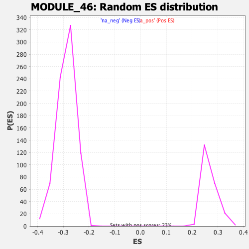

| | | Dataset | DE_genes |
| Phenotype | NoPhenotypeAvailable |
| Upregulated in class | na_pos |
| GeneSet | MODULE_46 |
| Enrichment Score (ES) | 0.7321094 |
| Normalized Enrichment Score (NES) | 2.7417605 |
| Nominal p-value | 0.0 |
| FDR q-value | 0.0 |
| FWER p-Value | 0.0 |
Table: GSEA Results Summary
 Fig 1: Enrichment plot: MODULE_46
Fig 1: Enrichment plot: MODULE_46
Profile of the Running ES Score & Positions of GeneSet Members on the Rank Ordered List
| PROBE | GENE SYMBOL | GENE_TITLE | RANK IN GENE LIST | RANK METRIC SCORE | RUNNING ES | CORE ENRICHMENT | | 1 | SELL | | | 0 | 21.201 | 0.0337 | Yes |
| 2 | CCL8 | | | 7 | 15.196 | 0.0574 | Yes |
| 3 | FCER1G | | | 8 | 15.109 | 0.0814 | Yes |
| 4 | CCL4 | | | 9 | 14.658 | 0.1047 | Yes |
| 5 | IL2RG | | | 11 | 13.785 | 0.1265 | Yes |
| 6 | IFIT1 | | | 14 | 12.905 | 0.1469 | Yes |
| 7 | OAS1 | | | 16 | 12.691 | 0.1670 | Yes |
| 8 | CCL11 | | | 22 | 11.788 | 0.1854 | Yes |
| 9 | IFITM2 | | | 23 | 11.709 | 0.2040 | Yes |
| 10 | IGSF6 | | | 32 | 10.374 | 0.2199 | Yes |
| 11 | MX2 | | | 37 | 9.799 | 0.2352 | Yes |
| 12 | AQP9 | | | 38 | 9.555 | 0.2504 | Yes |
| 13 | ISG15 | | | 44 | 9.032 | 0.2644 | Yes |
| 14 | CLC | | | 49 | 8.755 | 0.2781 | Yes |
| 15 | MXD1 | | | 54 | 8.396 | 0.2911 | Yes |
| 16 | MX1 | | | 61 | 7.913 | 0.3033 | Yes |
| 17 | IFITM1 | | | 66 | 7.728 | 0.3153 | Yes |
| 18 | CCL7 | | | 70 | 7.435 | 0.3269 | Yes |
| 19 | TNFSF10 | | | 80 | 7.044 | 0.3375 | Yes |
| 20 | CXCL10 | | | 86 | 6.536 | 0.3476 | Yes |
| 21 | TYROBP | | | 94 | 6.282 | 0.3571 | Yes |
| 22 | CSF3R | | | 95 | 6.260 | 0.3670 | Yes |
| 23 | CCL19 | | | 99 | 6.189 | 0.3766 | Yes |
| 24 | CD53 | | | 101 | 6.147 | 0.3863 | Yes |
| 25 | CEACAM1 | | | 111 | 5.843 | 0.3950 | Yes |
| 26 | IFITM3 | | | 123 | 5.548 | 0.4031 | Yes |
| 27 | LCP2 | | | 124 | 5.542 | 0.4119 | Yes |
| 28 | TNFSF14 | | | 125 | 5.540 | 0.4207 | Yes |
| 29 | CCL3 | | | 130 | 5.365 | 0.4290 | Yes |
| 30 | FCGR3B | | | 139 | 5.203 | 0.4367 | Yes |
| 31 | LAMP3 | | | 141 | 5.143 | 0.4448 | Yes |
| 32 | C3AR1 | | | 143 | 5.080 | 0.4528 | Yes |
| 33 | PGLYRP1 | | | 144 | 5.023 | 0.4608 | Yes |
| 34 | MNDA | | | 146 | 4.989 | 0.4686 | Yes |
| 35 | FGR | | | 155 | 4.741 | 0.4756 | Yes |
| 36 | IFIT5 | | | 166 | 4.505 | 0.4821 | Yes |
| 37 | OASL | | | 171 | 4.469 | 0.4890 | Yes |
| 38 | CCR1 | | | 175 | 4.383 | 0.4957 | Yes |
| 39 | LILRB2 | | | 183 | 4.180 | 0.5019 | Yes |
| 40 | LILRB3 | | | 197 | 3.879 | 0.5072 | Yes |
| 41 | CCL18 | | | 201 | 3.823 | 0.5131 | Yes |
| 42 | FCN1 | | | 205 | 3.751 | 0.5188 | Yes |
| 43 | LTF | | | 220 | 3.593 | 0.5236 | Yes |
| 44 | GBP1 | | | 221 | 3.577 | 0.5293 | Yes |
| 45 | CHIT1 | | | 225 | 3.543 | 0.5347 | Yes |
| 46 | CD69 | | | 227 | 3.522 | 0.5403 | Yes |
| 47 | CSF2RB | | | 228 | 3.521 | 0.5459 | Yes |
| 48 | CYBB | | | 231 | 3.449 | 0.5512 | Yes |
| 49 | STAT1 | | | 233 | 3.445 | 0.5566 | Yes |
| 50 | LST1 | | | 236 | 3.376 | 0.5618 | Yes |
| 51 | C6 | | | 245 | 3.321 | 0.5666 | Yes |
| 52 | FCGR2A | | | 246 | 3.320 | 0.5719 | Yes |
| 53 | GPR65 | | | 250 | 3.289 | 0.5769 | Yes |
| 54 | CR1 | | | 256 | 3.192 | 0.5816 | Yes |
| 55 | IL1A | | | 261 | 3.130 | 0.5863 | Yes |
| 56 | ARHGDIB | | | 262 | 3.115 | 0.5913 | Yes |
| 57 | HLA-DRB5 | | | 264 | 3.081 | 0.5961 | Yes |
| 58 | AIM2 | | | 270 | 3.052 | 0.6006 | Yes |
| 59 | IFI44 | | | 274 | 3.016 | 0.6052 | Yes |
| 60 | GNLY | | | 277 | 2.969 | 0.6098 | Yes |
| 61 | TLR1 | | | 283 | 2.887 | 0.6141 | Yes |
| 62 | CCL2 | | | 284 | 2.886 | 0.6186 | Yes |
| 63 | CD48 | | | 287 | 2.880 | 0.6231 | Yes |
| 64 | LILRA1 | | | 295 | 2.829 | 0.6271 | Yes |
| 65 | CST7 | | | 307 | 2.727 | 0.6307 | Yes |
| 66 | CXCL11 | | | 310 | 2.681 | 0.6348 | Yes |
| 67 | NCF4 | | | 313 | 2.656 | 0.6389 | Yes |
| 68 | SAA1 | | | 314 | 2.654 | 0.6431 | Yes |
| 69 | PTMS | | | 315 | 2.646 | 0.6473 | Yes |
| 70 | C5AR1 | | | 321 | 2.626 | 0.6512 | Yes |
| 71 | IL1B | | | 343 | 2.495 | 0.6538 | Yes |
| 72 | IRF7 | | | 368 | 2.364 | 0.6559 | Yes |
| 73 | BPI | | | 388 | 2.268 | 0.6583 | Yes |
| 74 | LY6E | | | 391 | 2.250 | 0.6617 | Yes |
| 75 | LBP | | | 411 | 2.115 | 0.6638 | Yes |
| 76 | CD55 | | | 413 | 2.110 | 0.6671 | Yes |
| 77 | CXCL6 | | | 421 | 2.072 | 0.6699 | Yes |
| 78 | CXCR2 | | | 429 | 2.008 | 0.6727 | Yes |
| 79 | HLA-A | | | 440 | 1.978 | 0.6751 | Yes |
| 80 | CAMP | | | 448 | 1.941 | 0.6778 | Yes |
| 81 | CTSS | | | 450 | 1.936 | 0.6808 | Yes |
| 82 | FCGR3A | | | 452 | 1.930 | 0.6838 | Yes |
| 83 | CD4 | | | 455 | 1.918 | 0.6867 | Yes |
| 84 | FGG | | | 471 | 1.855 | 0.6886 | Yes |
| 85 | NAMPT | | | 486 | 1.817 | 0.6906 | Yes |
| 86 | LY86 | | | 488 | 1.804 | 0.6934 | Yes |
| 87 | CFB | | | 489 | 1.800 | 0.6962 | Yes |
| 88 | ADRA2A | | | 490 | 1.794 | 0.6991 | Yes |
| 89 | HLA-B | | | 494 | 1.778 | 0.7017 | Yes |
| 90 | EVI2A | | | 496 | 1.778 | 0.7045 | Yes |
| 91 | CFP | | | 501 | 1.767 | 0.7070 | Yes |
| 92 | NCF1C | | | 507 | 1.720 | 0.7094 | Yes |
| 93 | CTSC | | | 508 | 1.718 | 0.7122 | Yes |
| 94 | TPSAB1 | | | 520 | 1.683 | 0.7141 | Yes |
| 95 | HP | | | 546 | 1.597 | 0.7150 | Yes |
| 96 | BST1 | | | 547 | 1.591 | 0.7175 | Yes |
| 97 | NCF2 | | | 548 | 1.590 | 0.7200 | Yes |
| 98 | B2M | | | 558 | 1.566 | 0.7219 | Yes |
| 99 | BCL6 | | | 612 | 1.442 | 0.7207 | Yes |
| 100 | RNASE6 | | | 634 | 1.397 | 0.7215 | Yes |
| 101 | C1S | | | 637 | 1.391 | 0.7236 | Yes |
| 102 | HLA-C | | | 648 | 1.379 | 0.7251 | Yes |
| 103 | PDGFRA | | | 680 | 1.313 | 0.7252 | Yes |
| 104 | TLR2 | | | 698 | 1.278 | 0.7261 | Yes |
| 105 | LGALS3BP | | | 702 | 1.274 | 0.7279 | Yes |
| 106 | MDK | | | 712 | 1.255 | 0.7293 | Yes |
| 107 | CD5L | | | 759 | 1.175 | 0.7281 | Yes |
| 108 | LILRB5 | | | 764 | 1.166 | 0.7297 | Yes |
| 109 | CLEC2B | | | 789 | 1.127 | 0.7299 | Yes |
| 110 | GBP2 | | | 792 | 1.122 | 0.7316 | Yes |
| 111 | FAS | | | 811 | 1.091 | 0.7321 | Yes |
| 112 | PSMB9 | | | 852 | 1.026 | 0.7311 | No |
| 113 | TIMP1 | | | 930 | 0.945 | 0.7275 | No |
| 114 | EMP3 | | | 965 | 0.905 | 0.7267 | No |
| 115 | LILRB1 | | | 1057 | 0.791 | 0.7219 | No |
| 116 | CXCL13 | | | 1108 | 0.748 | 0.7198 | No |
| 117 | LILRB4 | | | 1109 | 0.748 | 0.7210 | No |
| 118 | CD86 | | | 1169 | 0.700 | 0.7182 | No |
| 119 | PTAFR | | | 1254 | 0.637 | 0.7137 | No |
| 120 | ADA | | | 1257 | 0.635 | 0.7145 | No |
| 121 | C2 | | | 1258 | 0.634 | 0.7155 | No |
| 122 | CD24 | | | 1260 | 0.631 | 0.7165 | No |
| 123 | IL11 | | | 1273 | 0.625 | 0.7167 | No |
| 124 | FGA | | | 1277 | 0.624 | 0.7175 | No |
| 125 | SPOCK1 | | | 1287 | 0.619 | 0.7179 | No |
| 126 | C4BPA | | | 1292 | 0.618 | 0.7186 | No |
| 127 | LTB | | | 1307 | 0.609 | 0.7186 | No |
| 128 | SERPING1 | | | 1314 | 0.606 | 0.7192 | No |
| 129 | DEFB1 | | | 1344 | 0.588 | 0.7182 | No |
| 130 | IL18 | | | 1391 | 0.569 | 0.7161 | No |
| 131 | SERPINF1 | | | 1443 | 0.546 | 0.7135 | No |
| 132 | IL6ST | | | 1449 | 0.543 | 0.7141 | No |
| 133 | LILRA2 | | | 1466 | 0.534 | 0.7139 | No |
| 134 | LSP1 | | | 1478 | 0.527 | 0.7140 | No |
| 135 | HLA-DRA | | | 1481 | 0.526 | 0.7147 | No |
| 136 | NRP1 | | | 1536 | 0.501 | 0.7119 | No |
| 137 | ENPEP | | | 1562 | 0.489 | 0.7110 | No |
| 138 | TGFBI | | | 1568 | 0.486 | 0.7115 | No |
| 139 | GRN | | | 1573 | 0.481 | 0.7120 | No |
| 140 | C3 | | | 1577 | 0.480 | 0.7125 | No |
| 141 | CCL20 | | | 1581 | 0.479 | 0.7131 | No |
| 142 | F3 | | | 1587 | 0.477 | 0.7135 | No |
| 143 | SLAMF1 | | | 1687 | 0.438 | 0.7077 | No |
| 144 | IFI27 | | | 1711 | 0.427 | 0.7068 | No |
| 145 | CCL13 | | | 1770 | 0.401 | 0.7036 | No |
| 146 | HLA-G | | | 1870 | 0.363 | 0.6976 | No |
| 147 | CREG1 | | | 1959 | 0.338 | 0.6924 | No |
| 148 | CD79A | | | 2009 | 0.323 | 0.6896 | No |
| 149 | STAT3 | | | 2042 | 0.314 | 0.6880 | No |
| 150 | MPO | | | 2055 | 0.309 | 0.6877 | No |
| 151 | IL1RAP | | | 2066 | 0.305 | 0.6875 | No |
| 152 | AKR1C3 | | | 2078 | 0.304 | 0.6873 | No |
| 153 | APOE | | | 2087 | 0.301 | 0.6872 | No |
| 154 | TIRAP | | | 2141 | 0.284 | 0.6842 | No |
| 155 | C1QA | | | 2294 | 0.244 | 0.6745 | No |
| 156 | BCL2 | | | 2407 | 0.225 | 0.6675 | No |
| 157 | IFNGR2 | | | 2488 | 0.211 | 0.6625 | No |
| 158 | CEBPB | | | 2617 | 0.186 | 0.6543 | No |
| 159 | CTSG | | | 2639 | 0.184 | 0.6532 | No |
| 160 | NFKBIA | | | 2692 | 0.177 | 0.6501 | No |
| 161 | CXCL1 | | | 2830 | 0.158 | 0.6413 | No |
| 162 | SEMA4D | | | 2902 | 0.150 | 0.6368 | No |
| 163 | CD14 | | | 2927 | 0.147 | 0.6354 | No |
| 164 | IGF1 | | | 2978 | 0.142 | 0.6324 | No |
| 165 | LILRA3 | | | 3035 | 0.137 | 0.6289 | No |
| 166 | TFF1 | | | 3050 | 0.136 | 0.6282 | No |
| 167 | IL17A | | | 3052 | 0.136 | 0.6283 | No |
| 168 | CXCL9 | | | 3057 | 0.135 | 0.6283 | No |
| 169 | SKAP1 | | | 3087 | 0.132 | 0.6266 | No |
| 170 | KLRC2 | | | 3376 | 0.108 | 0.6077 | No |
| 171 | CFHR1 | | | 3406 | 0.106 | 0.6059 | No |
| 172 | OPRK1 | | | 3413 | 0.106 | 0.6057 | No |
| 173 | C8B | | | 3415 | 0.106 | 0.6058 | No |
| 174 | FGB | | | 3462 | 0.102 | 0.6029 | No |
| 175 | ITGB2 | | | 3683 | 0.088 | 0.5885 | No |
| 176 | KIR3DL1 | | | 3698 | 0.087 | 0.5877 | No |
| 177 | CHRM3 | | | 3826 | 0.080 | 0.5794 | No |
| 178 | VTN | | | 3829 | 0.080 | 0.5794 | No |
| 179 | EDN1 | | | 3846 | 0.079 | 0.5785 | No |
| 180 | C4BPB | | | 3855 | 0.078 | 0.5781 | No |
| 181 | FCGRT | | | 4149 | 0.062 | 0.5588 | No |
| 182 | EGF | | | 4236 | 0.056 | 0.5532 | No |
| 183 | CR2 | | | 4322 | 0.052 | 0.5477 | No |
| 184 | IL16 | | | 4376 | 0.049 | 0.5442 | No |
| 185 | EPS8 | | | 4385 | 0.048 | 0.5438 | No |
| 186 | C8G | | | 4407 | 0.047 | 0.5425 | No |
| 187 | CX3CL1 | | | 4512 | 0.041 | 0.5357 | No |
| 188 | CD19 | | | 4540 | 0.039 | 0.5339 | No |
| 189 | FGF9 | | | 4590 | 0.037 | 0.5308 | No |
| 190 | C7 | | | 4627 | 0.035 | 0.5284 | No |
| 191 | CCL17 | | | 4682 | 0.033 | 0.5249 | No |
| 192 | TNFRSF13B | | | 4755 | 0.028 | 0.5202 | No |
| 193 | CIITA | | | 4830 | 0.025 | 0.5153 | No |
| 194 | ORM2 | | | 4877 | 0.023 | 0.5123 | No |
| 195 | RAG1 | | | 4984 | 0.017 | 0.5053 | No |
| 196 | THPO | | | 5015 | 0.015 | 0.5034 | No |
| 197 | OSM | | | 5025 | 0.014 | 0.5028 | No |
| 198 | PDGFA | | | 5059 | 0.012 | 0.5006 | No |
| 199 | PRF1 | | | 5103 | 0.011 | 0.4978 | No |
| 200 | KLRC1 | | | 5166 | 0.008 | 0.4937 | No |
| 201 | DPP4 | | | 5195 | 0.006 | 0.4919 | No |
| 202 | HLA-DMB | | | 5259 | 0.003 | 0.4877 | No |
| 203 | ENTPD1 | | | 5268 | 0.003 | 0.4872 | No |
| 204 | CD79B | | | 5305 | 0.001 | 0.4848 | No |
| 205 | HFE | | | 5466 | -0.008 | 0.4742 | No |
| 206 | DEFA4 | | | 5614 | -0.016 | 0.4645 | No |
| 207 | C1R | | | 5634 | -0.017 | 0.4633 | No |
| 208 | MS4A2 | | | 5703 | -0.021 | 0.4588 | No |
| 209 | CLU | | | 5726 | -0.022 | 0.4574 | No |
| 210 | CCR5 | | | 5803 | -0.026 | 0.4524 | No |
| 211 | NPY1R | | | 5898 | -0.032 | 0.4463 | No |
| 212 | CD247 | | | 5927 | -0.034 | 0.4445 | No |
| 213 | CD1C | | | 5972 | -0.037 | 0.4416 | No |
| 214 | CXCR4 | | | 5988 | -0.038 | 0.4407 | No |
| 215 | SH2B2 | | | 6008 | -0.040 | 0.4395 | No |
| 216 | FLT3 | | | 6012 | -0.040 | 0.4394 | No |
| 217 | LTA | | | 6056 | -0.043 | 0.4366 | No |
| 218 | LY6H | | | 6062 | -0.043 | 0.4363 | No |
| 219 | IL18R1 | | | 6089 | -0.045 | 0.4347 | No |
| 220 | FN1 | | | 6107 | -0.047 | 0.4336 | No |
| 221 | ISG20 | | | 6203 | -0.053 | 0.4274 | No |
| 222 | FASLG | | | 6250 | -0.056 | 0.4245 | No |
| 223 | OSMR | | | 6284 | -0.058 | 0.4224 | No |
| 224 | BST2 | | | 6315 | -0.060 | 0.4205 | No |
| 225 | ALCAM | | | 6320 | -0.060 | 0.4203 | No |
| 226 | XCL1 | | | 6351 | -0.062 | 0.4184 | No |
| 227 | AGRP | | | 6403 | -0.065 | 0.4152 | No |
| 228 | PDCD1 | | | 6526 | -0.074 | 0.4072 | No |
| 229 | CCL21 | | | 6653 | -0.085 | 0.3990 | No |
| 230 | GPR183 | | | 6704 | -0.088 | 0.3958 | No |
| 231 | CDK5R1 | | | 6778 | -0.093 | 0.3912 | No |
| 232 | PF4 | | | 6861 | -0.099 | 0.3859 | No |
| 233 | ORM1 | | | 6933 | -0.106 | 0.3814 | No |
| 234 | IL7R | | | 7020 | -0.112 | 0.3758 | No |
| 235 | CAPG | | | 7045 | -0.114 | 0.3744 | No |
| 236 | NPY | | | 7263 | -0.132 | 0.3603 | No |
| 237 | CD3G | | | 7334 | -0.139 | 0.3559 | No |
| 238 | CCR2 | | | 7409 | -0.145 | 0.3512 | No |
| 239 | EGR4 | | | 7514 | -0.153 | 0.3446 | No |
| 240 | CD101 | | | 7610 | -0.163 | 0.3386 | No |
| 241 | UBE2C | | | 7666 | -0.167 | 0.3352 | No |
| 242 | FGF7 | | | 7714 | -0.172 | 0.3323 | No |
| 243 | LRP1 | | | 7763 | -0.176 | 0.3294 | No |
| 244 | CFI | | | 7794 | -0.179 | 0.3277 | No |
| 245 | BATF | | | 7813 | -0.180 | 0.3268 | No |
| 246 | CD81 | | | 7912 | -0.190 | 0.3207 | No |
| 247 | DEFB4A | | | 7926 | -0.191 | 0.3201 | No |
| 248 | GZMA | | | 7938 | -0.193 | 0.3197 | No |
| 249 | IFNGR1 | | | 7948 | -0.193 | 0.3194 | No |
| 250 | EDA | | | 7987 | -0.197 | 0.3172 | No |
| 251 | DAB2 | | | 8044 | -0.203 | 0.3138 | No |
| 252 | MGST2 | | | 8071 | -0.205 | 0.3124 | No |
| 253 | KCNN4 | | | 8096 | -0.208 | 0.3112 | No |
| 254 | F8 | | | 8117 | -0.210 | 0.3102 | No |
| 255 | TACSTD2 | | | 8171 | -0.215 | 0.3070 | No |
| 256 | CD27 | | | 8199 | -0.218 | 0.3056 | No |
| 257 | HLA-DOA | | | 8401 | -0.239 | 0.2926 | No |
| 258 | CRLF1 | | | 8417 | -0.242 | 0.2920 | No |
| 259 | MS4A1 | | | 8486 | -0.250 | 0.2879 | No |
| 260 | ADRA1D | | | 8502 | -0.251 | 0.2873 | No |
| 261 | C5 | | | 8664 | -0.270 | 0.2771 | No |
| 262 | IL6 | | | 8782 | -0.284 | 0.2698 | No |
| 263 | VIP | | | 8795 | -0.285 | 0.2695 | No |
| 264 | GRAP2 | | | 8902 | -0.298 | 0.2629 | No |
| 265 | GATA3 | | | 8974 | -0.307 | 0.2587 | No |
| 266 | GPX3 | | | 8992 | -0.309 | 0.2581 | No |
| 267 | FCER1A | | | 9053 | -0.318 | 0.2546 | No |
| 268 | CSRP2 | | | 9076 | -0.320 | 0.2537 | No |
| 269 | S100B | | | 9122 | -0.325 | 0.2512 | No |
| 270 | PTGER4 | | | 9166 | -0.331 | 0.2489 | No |
| 271 | MAD1L1 | | | 9297 | -0.347 | 0.2409 | No |
| 272 | CD72 | | | 9326 | -0.350 | 0.2396 | No |
| 273 | IL6R | | | 9423 | -0.362 | 0.2338 | No |
| 274 | IL2RB | | | 9457 | -0.366 | 0.2322 | No |
| 275 | BTG1 | | | 9479 | -0.370 | 0.2314 | No |
| 276 | RUNX3 | | | 9497 | -0.373 | 0.2308 | No |
| 277 | IRF1 | | | 9517 | -0.375 | 0.2302 | No |
| 278 | IL1R1 | | | 9853 | -0.425 | 0.2087 | No |
| 279 | CD40 | | | 9945 | -0.439 | 0.2034 | No |
| 280 | CFH | | | 9950 | -0.439 | 0.2038 | No |
| 281 | CD59 | | | 10049 | -0.454 | 0.1980 | No |
| 282 | CX3CR1 | | | 10151 | -0.470 | 0.1921 | No |
| 283 | CXCL5 | | | 10222 | -0.480 | 0.1882 | No |
| 284 | EREG | | | 10458 | -0.513 | 0.1735 | No |
| 285 | CXCL14 | | | 10622 | -0.541 | 0.1636 | No |
| 286 | CD8B | | | 10740 | -0.559 | 0.1567 | No |
| 287 | CCL23 | | | 10746 | -0.560 | 0.1573 | No |
| 288 | TGFB3 | | | 10966 | -0.592 | 0.1437 | No |
| 289 | CSF3 | | | 10987 | -0.595 | 0.1434 | No |
| 290 | CD22 | | | 11000 | -0.597 | 0.1435 | No |
| 291 | IRF8 | | | 11011 | -0.599 | 0.1438 | No |
| 292 | PTN | | | 11230 | -0.642 | 0.1304 | No |
| 293 | TFF3 | | | 11232 | -0.643 | 0.1314 | No |
| 294 | MGST3 | | | 11303 | -0.658 | 0.1278 | No |
| 295 | BCAT1 | | | 11390 | -0.676 | 0.1232 | No |
| 296 | HBEGF | | | 11688 | -0.740 | 0.1047 | No |
| 297 | SH2D1A | | | 11735 | -0.749 | 0.1028 | No |
| 298 | NR4A2 | | | 11743 | -0.749 | 0.1036 | No |
| 299 | CSF1 | | | 11758 | -0.753 | 0.1038 | No |
| 300 | AREG | | | 11769 | -0.755 | 0.1044 | No |
| 301 | LTBR | | | 11818 | -0.765 | 0.1024 | No |
| 302 | CXCL12 | | | 11856 | -0.773 | 0.1012 | No |
| 303 | ZEB1 | | | 11900 | -0.785 | 0.0996 | No |
| 304 | UBD | | | 12062 | -0.817 | 0.0902 | No |
| 305 | KLF6 | | | 12090 | -0.825 | 0.0898 | No |
| 306 | PSTPIP1 | | | 12104 | -0.831 | 0.0902 | No |
| 307 | ERG | | | 12161 | -0.844 | 0.0879 | No |
| 308 | IL15RA | | | 12239 | -0.862 | 0.0841 | No |
| 309 | MST1R | | | 12264 | -0.868 | 0.0839 | No |
| 310 | PDGFB | | | 12316 | -0.881 | 0.0819 | No |
| 311 | CD300C | | | 12362 | -0.892 | 0.0804 | No |
| 312 | INSIG1 | | | 12387 | -0.899 | 0.0802 | No |
| 313 | P4HA2 | | | 12441 | -0.914 | 0.0782 | No |
| 314 | CD3D | | | 12580 | -0.948 | 0.0705 | No |
| 315 | CXCL2 | | | 12622 | -0.959 | 0.0694 | No |
| 316 | CD2 | | | 12739 | -0.995 | 0.0633 | No |
| 317 | CD5 | | | 12829 | -1.022 | 0.0590 | No |
| 318 | DNAJC3 | | | 12886 | -1.040 | 0.0569 | No |
| 319 | IL24 | | | 12937 | -1.057 | 0.0553 | No |
| 320 | FYN | | | 12960 | -1.064 | 0.0555 | No |
| 321 | PPBP | | | 12965 | -1.066 | 0.0570 | No |
| 322 | TGFA | | | 13031 | -1.085 | 0.0544 | No |
| 323 | TNFSF12 | | | 13048 | -1.090 | 0.0551 | No |
| 324 | AZGP1 | | | 13049 | -1.090 | 0.0568 | No |
| 325 | SFTPD | | | 13207 | -1.141 | 0.0482 | No |
| 326 | LIF | | | 13208 | -1.142 | 0.0500 | No |
| 327 | SELP | | | 13256 | -1.156 | 0.0488 | No |
| 328 | PRKD1 | | | 13323 | -1.181 | 0.0463 | No |
| 329 | ITK | | | 13389 | -1.210 | 0.0439 | No |
| 330 | CD6 | | | 13425 | -1.221 | 0.0435 | No |
| 331 | SEMA3C | | | 13446 | -1.230 | 0.0442 | No |
| 332 | ST6GAL1 | | | 13632 | -1.302 | 0.0340 | No |
| 333 | CD83 | | | 13751 | -1.361 | 0.0283 | No |
| 334 | IL15 | | | 13797 | -1.380 | 0.0276 | No |
| 335 | HLA-F | | | 13831 | -1.392 | 0.0276 | No |
| 336 | LAT | | | 13912 | -1.429 | 0.0246 | No |
| 337 | ERBB2 | | | 13972 | -1.456 | 0.0230 | No |
| 338 | EMP2 | | | 14072 | -1.514 | 0.0188 | No |
| 339 | IL27RA | | | 14095 | -1.531 | 0.0198 | No |
| 340 | ZFP36L2 | | | 14158 | -1.575 | 0.0182 | No |
| 341 | IL4R | | | 14224 | -1.614 | 0.0165 | No |
| 342 | VIPR1 | | | 14398 | -1.716 | 0.0077 | No |
| 343 | EMP1 | | | 14445 | -1.749 | 0.0075 | No |
| 344 | EDNRA | | | 14485 | -1.776 | 0.0077 | No |
| 345 | CD8A | | | 14518 | -1.804 | 0.0085 | No |
| 346 | ETS1 | | | 14521 | -1.805 | 0.0112 | No |
| 347 | STAT5A | | | 14602 | -1.876 | 0.0089 | No |
| 348 | GEM | | | 14702 | -1.971 | 0.0055 | No |
| 349 | MYC | | | 14984 | -2.284 | -0.0095 | No |
| 350 | S1PR2 | | | 14995 | -2.294 | -0.0065 | No |
| 351 | NAB2 | | | 15031 | -2.342 | -0.0051 | No |
| 352 | MTHFR | | | 15052 | -2.388 | -0.0026 | No |
| 353 | PRG2 | | | 15083 | -2.442 | -0.0007 | No |
| 354 | ADORA2A | | | 15293 | -2.894 | -0.0100 | No |
| 355 | SFN | | | 15427 | -3.952 | -0.0125 | No |
| 356 | GAS6 | | | 15450 | -4.487 | -0.0068 | No |
| 357 | CRIP1 | | | 15466 | -5.128 | 0.0003 | No |
Table: GSEA details [plain text format]

Fig 2: MODULE_46: Random ES distribution
Gene set null distribution of ES for MODULE_46